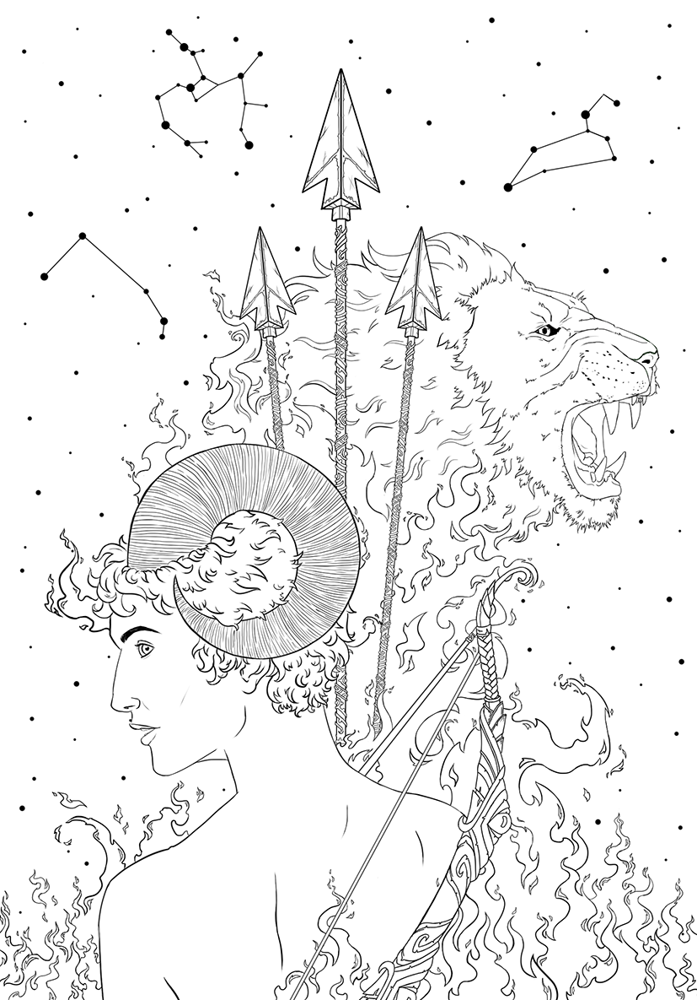
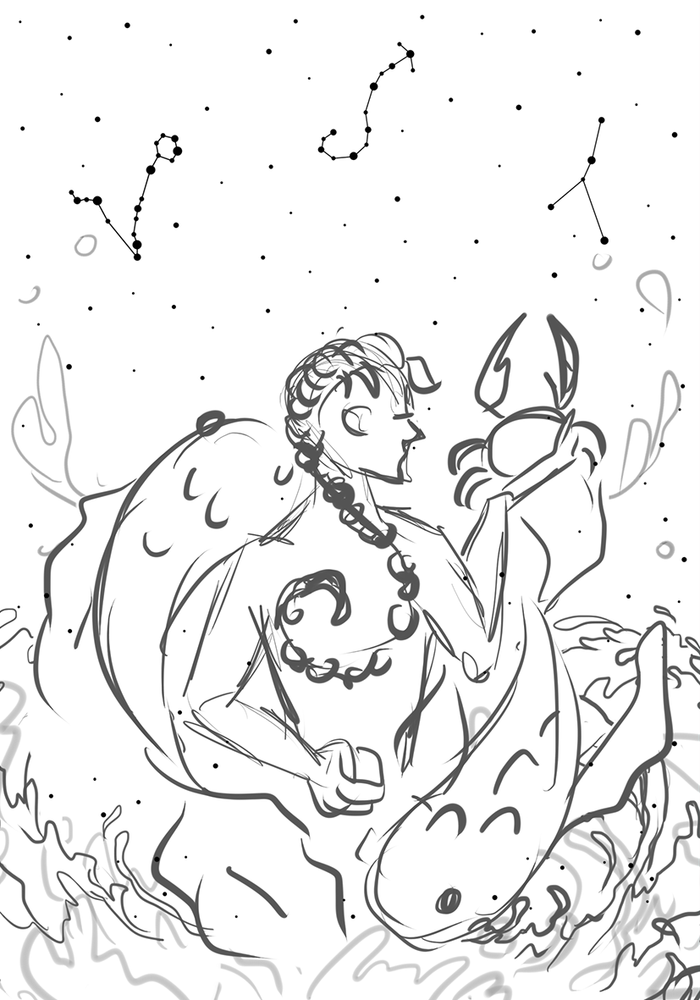

PROYECTOS
Nothing Revealed
Ilustración inspirada en la cancion de la banda The 1975 titulada "Nothing revealed, everything denied". El reto principal de la pieza fue poder asignar los valores adecuados a cada elemento de la composición. En el proceso de renderizado, inicialmente use la escala de grises para posteriormente con el uso de capas de fusión ,poder aplicar los colores. Usando referencias para ilustrar el fondo, logré acercarme al objetivo que tenia, el cual era poder darle profundidad a las nubes.
Zodiaco

Estas 4 piezas fueron diseñadas con el fin de ser parte de una colección de agendas. Las ilustraciones estan basadas en los signos zodiacales y los elementos que los representan. Quise retratar cada uno de los simbolos del zodiaco y que interacutaran entre si. La tecnica en la cual me base fue en un line art mas limpio y sin renderizado. Esta primera imagen representa los signos de aire Libra, Geminis y Acuario.
Para la composición de los signos de tierra decidí representar a los 2 animales caracteristicos de Tauro, el toro y de Capricornio, la cabra. Para Virgo, usé como simbolo una virgen y la agricultura. Este elemento cambió desde el sketch inicial a la pieza final, en la cual opte por agregar un arbol para conectar los 3 signos.
Para los singos de fuego quise que todos estuvieran conectados/consumidos por su elemento. Para Aries y Sagitario decidi combinar a un arquero con cuernos de carnero y un león surgiendo de las llamas del fuego para la representación de Leo.
La ilustración para los signos de agua fue la que mas tiempo me tomo en conceptualizar ya que quería retratar la fluidez del elemento y que cada simbolo interactuara con la misma. El representante de Escorpio es el hombre con una trenza similar a un escorpión, el cual sostiene a un cangrejo, simbolo de Cancer y los caracteristicos peces para Piscis. Cada ilustracion cuenta con las constelaciónes de los signos en el fondo.
Polinizadores

Esta ilustación hace parte de la colección "Polinizadores" de la editorial Colombiana Tagigo. El enfoque de la pieza fue para un publico infantil. En esta composición el proposito fue que el polinizador protagonista del libro, que en mi caso fue la mariposa, fuera el centro de la imagen y de igual manera intergar los demas polinzadores, la abeja y el colibrí en la escena.